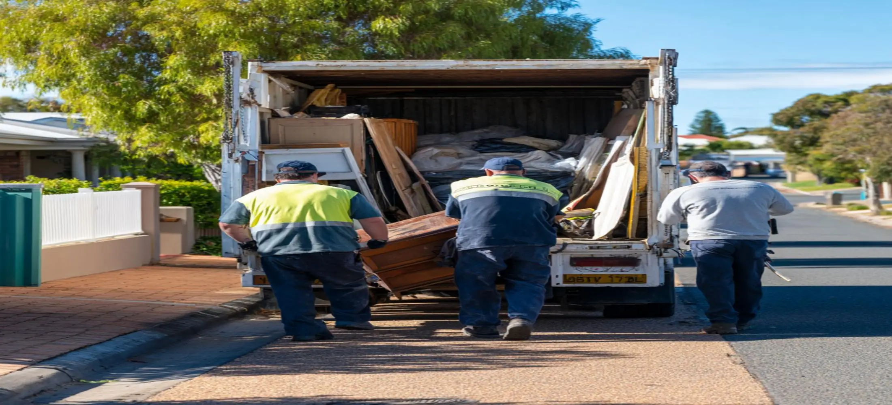
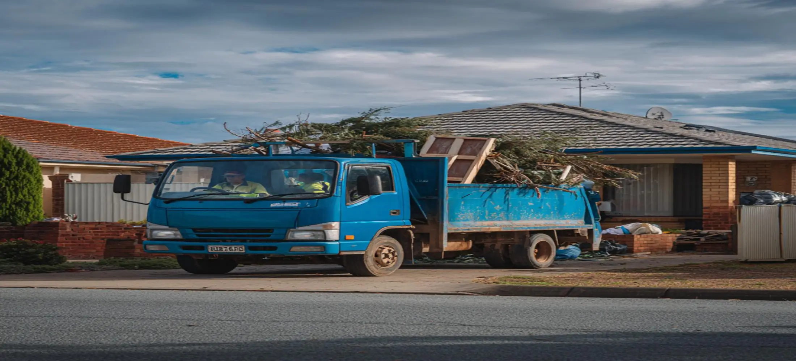

What Is Rubbish Removal In Bunbury WA?
Rubbish removal Bunbury services provide a fully managed waste collection solution where unwanted materials are removed directly from your property by a collection team. Unlike skip bin hire, customers do not need to load waste themselves or keep a bin onsite for several days. The service is commonly used for household cleanups, furniture disposal, green waste collection, renovation debris removal, office cleanouts, and property clearances. Many customers choose rubbish removal when they want unwanted items collected quickly and efficiently with minimal disruption to their property.
Common Rubbish Removal Projects In Bunbury
Our rubbish and waste removal Bunbury service is commonly used for house cleanouts, rental property clearances, deceased estates, office cleanups, moving house, renovation waste removal, and general decluttering projects. Homeowners often contact us when garages, sheds, spare rooms, and outdoor areas have accumulated unwanted items over time. Businesses also use rubbish removal Bunbury WA services when relocating premises, upgrading facilities, or removing excess stock and office furniture. These projects often involve bulky or mixed waste that would be difficult to remove using normal household bins.
Garden Rubbish Removal Bunbury
Garden waste can quickly accumulate after landscaping projects, seasonal maintenance, tree pruning, storm cleanup work, and general property upkeep. Garden rubbish removal Bunbury services are commonly used to remove branches, shrubs, leaves, grass clippings, palm fronds, weeds, and other green waste materials. Large piles of garden waste can create access issues and make outdoor spaces harder to maintain. Professional collection helps property owners clear outdoor areas more efficiently while avoiding multiple trips to disposal facilities.
Household Rubbish & Furniture Removal
Household rubbish removal is one of the most common services requested by Bunbury homeowners. Old lounges, mattresses, appliances, broken furniture, boxes, unwanted household goods, and general clutter can take up valuable space inside homes, garages, and storage areas. Many customers organise rubbish removal Bunbury services before selling a property, moving house, downsizing, or preparing for renovations. Removing bulky items can help improve property presentation, increase usable space, and make homes easier to maintain.
Why Choose Our Rubbish Removal Service In Bunbury
Many customers prefer rubbish removal over skip bin hire because everything is loaded and removed by the collection team. This can be particularly beneficial for elderly homeowners, busy families, landlords, property managers, and customers dealing with heavy or bulky waste. Instead of organising a skip bin, filling it yourself, and arranging collection later, rubbish removal Bunbury services provide a simpler solution where unwanted materials are collected directly from the property. For many one-off cleanup projects, this approach saves time and reduces physical effort.
What Affects Rubbish Removal Costs?
Rubbish removal pricing is influenced by several factors including the volume of waste, material type, loading requirements, property access, labour involved, and disposal fees. Smaller household jobs generally require less time and labour than large-scale property clearances or renovation cleanups. When preparing a quote, we assess the amount of rubbish involved, site access conditions, and the most efficient removal method. This helps ensure customers receive a practical waste removal solution suited to their specific project requirements.
Rubbish Removal Across Bunbury WA
We provide rubbish removal Bunbury WA services across residential, commercial, and industrial locations throughout Bunbury and surrounding communities. Customers use our service for household cleanups, rental property clearances, office waste removal, garden waste collection, renovation debris disposal, and general rubbish removal projects. Whether you need a single bulky item removed or a complete property cleanup, we help connect customers with practical rubbish and waste removal Bunbury solutions that simplify the disposal process. Services can often be arranged for both small and large projects depending on access requirements and waste volume.

Frequently Asked Questions
What types of rubbish can be removed in Bunbury?
Rubbish removal Bunbury services can generally handle household rubbish, unwanted furniture, mattresses, appliances, office equipment, green waste, renovation debris, and general clutter. The specific materials accepted may vary depending on disposal requirements and local regulations. When requesting a quote, we can help determine the most suitable solution based on the waste involved.
Do you provide rubbish and waste removal Bunbury services for garden cleanups?
Yes. Our rubbish and waste removal Bunbury service is commonly used for landscaping projects, seasonal garden maintenance, storm cleanup work, and property upgrades. Branches, shrubs, leaves, grass clippings, and other green waste materials can be collected and removed without requiring customers to organise their own transport or disposal arrangements.
Is rubbish removal better than hiring a skip bin?
The best option depends on the project. Rubbish removal is often preferred when customers want everything loaded and removed for them immediately. Skip bins may be more suitable for projects that generate waste over several days or weeks. We can help identify the most practical option based on the waste volume, project timeframe, and site conditions.
How quickly can rubbish removal Bunbury WA services be arranged?
Scheduling depends on availability, waste volume, access requirements, and project complexity. Smaller household rubbish removal jobs can often be organised quickly, while larger property clearances may require additional planning. When you contact us, we can discuss your project and recommend the most suitable collection timeframe.
Can you remove rubbish from rental properties and deceased estates?
Yes. Many customers use rubbish removal Bunbury services for end-of-lease cleanouts, rental property clearances, deceased estates, and properties being prepared for sale. These projects often involve large volumes of mixed household items, furniture, and general waste. Our goal is to help simplify the cleanup process by providing an efficient removal solution tailored to the property's requirements.